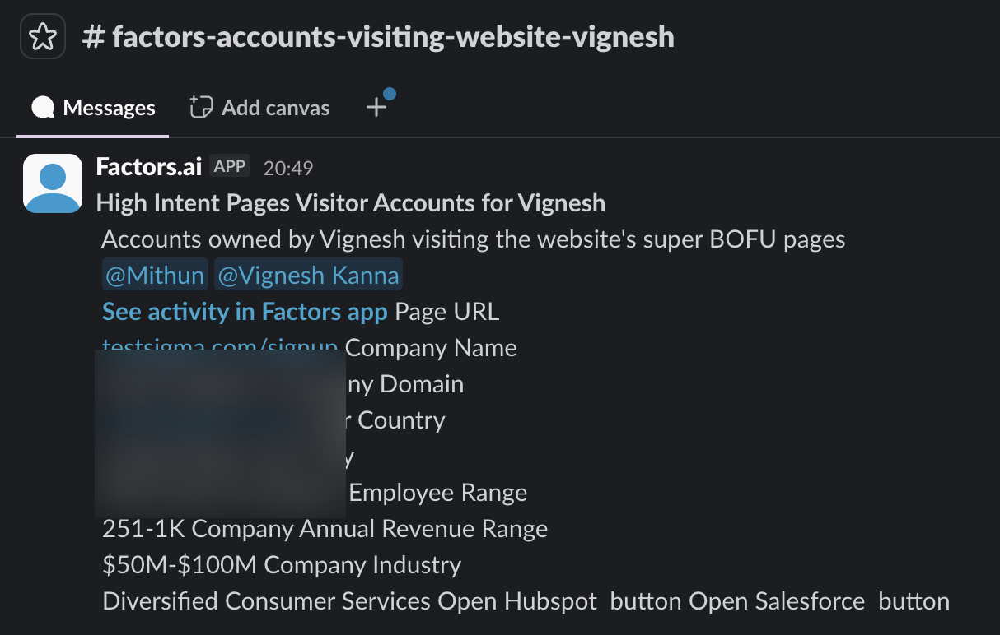
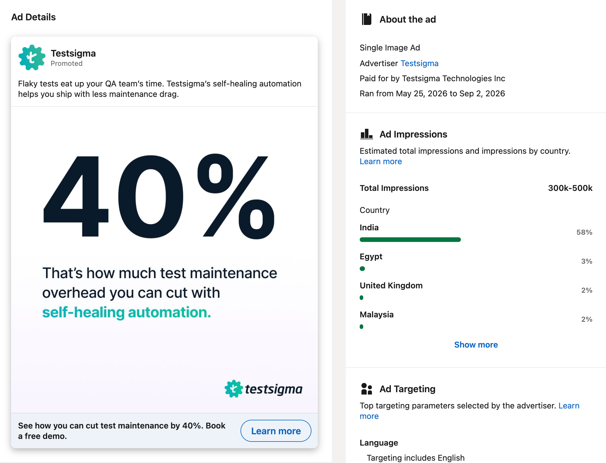
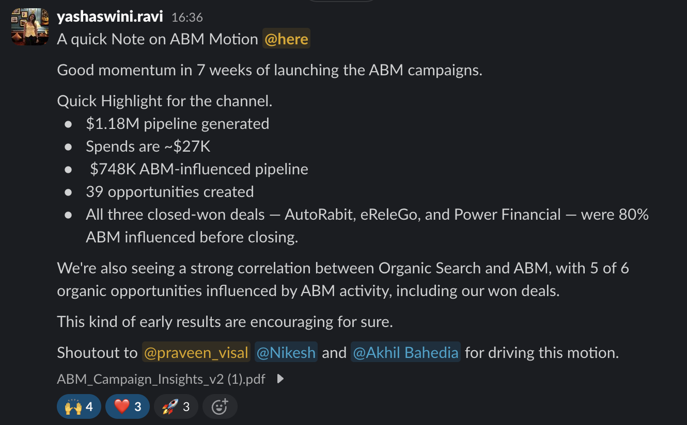

Testsigma had no systematic way of knowing which companies were browsing the site with real buying intent. Inbound was the only motion. Outbound existed on paper, but without a way to prioritize who to actually call, it rarely started.
In July 2024, I brought in Factors to de-anonymize website traffic — turning anonymous visitors into identifiable companies, then routing high-intent accounts to the right rep automatically. This wasn't a mature ABM program yet. It was a pilot, run to answer one question: is there real pipeline sitting in our anonymous traffic that we're simply not seeing?
The answer was yes. The pilot alone generated $1M in pipeline — and just as importantly, it gave Testsigma's outbound motion something it never had: a working, prioritized list of accounts actually worth calling.

A live Factors alert routing a high-intent account straight to the owning BDR — this is the tooling behind the pilot, still running today. (Company details blurred.)
Once the pilot proved the model, the motion scaled from a single BDR and LDR to the full team. De-anonymization stopped being an experiment and became a standing part of how Testsigma's outbound org operates — a reliable, quarter-over-quarter source of sales-accepted opportunities.
With the foundation in place, I co-drove a dedicated ABM motion — a different level of sophistication from the original pilot. This time: LinkedIn ads served directly to a defined target-account list (TAM), coordinated with the BDR-owned account list so that by the time a rep reached out, the account had already heard of Testsigma.

One of the LinkedIn ABM ads served to the APAC target-account list.
In its first 7 weeks, this campaign generated $1.18M in pipeline — $748K of it directly ABM-influenced — on roughly $27K in spend. Three deals closed won in that window, and every one of them was 80%+ ABM-influenced before close.

The internal results readout on the ABM campaign — the source of the $1.18M / $748K figures above.
"With Testsigma, he implemented and drove the adoption of Factors (ABM platform) which kickstarted the outbound motion and enabled to increase outbound pipeline and add 1 Million in Pipeline. Along with this, I have seen Praveen launch our GTM products — Atto and Arcus — live. Praveen has always been warm, easy to collaborate with and bridges the gap together. 10/10 — recommended."
ABM only works if sales and marketing are actually reading the same signal. The recommendation above is from an AE, not a peer marketer — evidence that this wasn't a campaign run in isolation, but a motion built with the sales team, for the sales team.